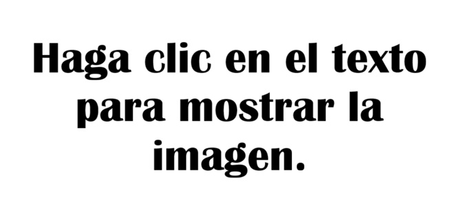

La nutria europea o paleártica (Lutra lutra) es un mamífero semiacuático de la familia Mustelidae (orden Carnivora), caracterizado por su cuerpo alargado, pelaje denso e impermeable, y patas palmeadas adaptadas para la natación.
El buitre leonado (Gyps fulvus)también conocido como buitre común, es una ave rapaz carroñera de gran tamaño y coloración pardo leonada, característica que le da nombre. Es una de las especies de buitres más comunes en Europa, junto con el buitre negro, el alimoche y el quebrantahuesos.
La gineta (Genetta genetta) también conocida como jineta o gato almizclero, es un mamífero carnívoro de la familia de los vivérridos, siendo la única de su familia presente en Europa. Aunque tiene un aspecto muy similar al de un gato, no es un felino, sino un animal esbelto con patas cortas, orejas grandes y una cola larga con anillos negros que usa para equilibrarse.
Conocido por su sonada exiténcia, el Patoso es sin duda alguna uno de los experimentos más llamativos de la creación de Diós, si es que existe. Aunque parezca imposible es el cruce de una pata y un oso, y es por ello que a pesar de ser un mamífero, el patoso nace de un huevo. Es un animal muy tímido. En la imágen podemos ver a Papá Oso, que se puso delante al sacar la foto de la cria.
